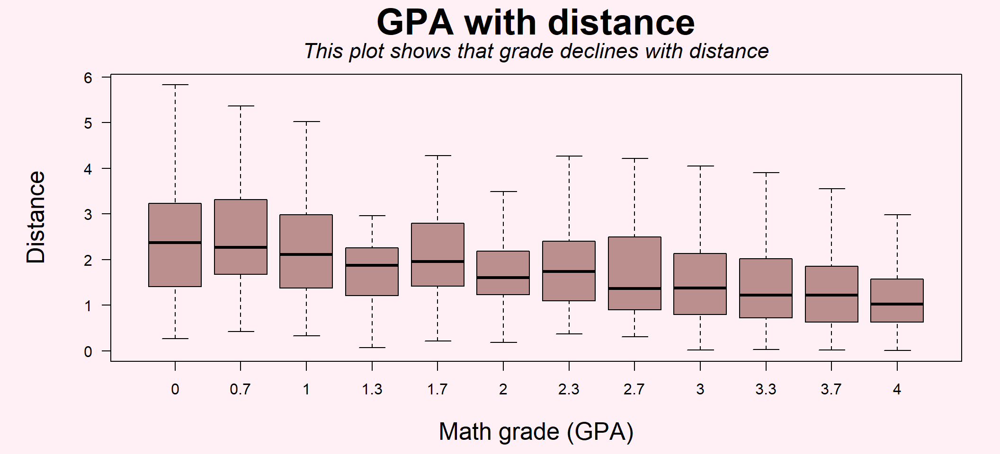
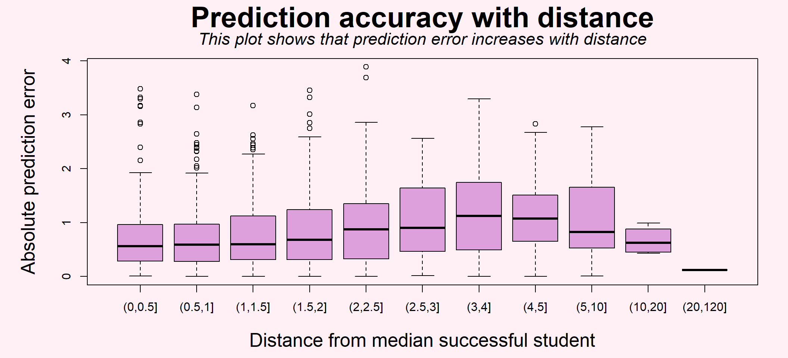
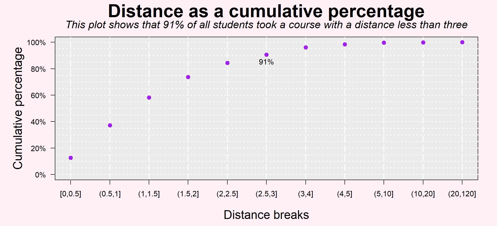
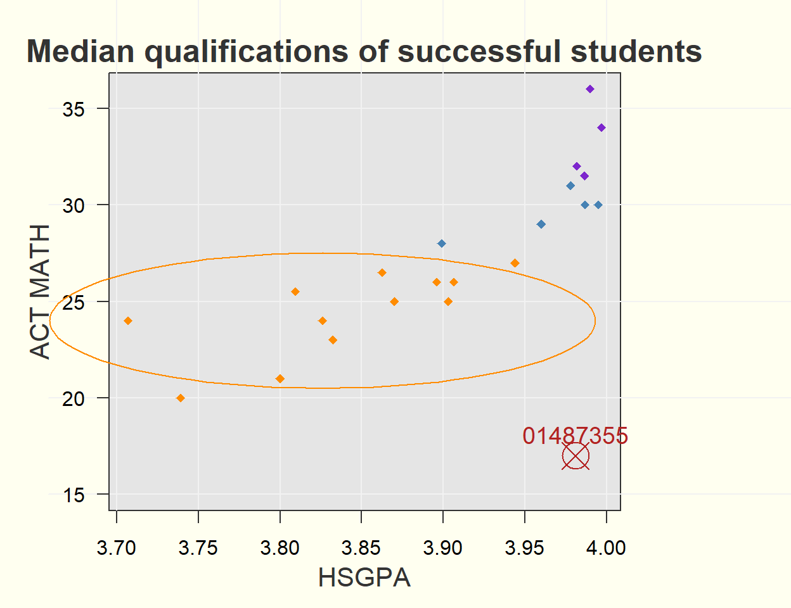
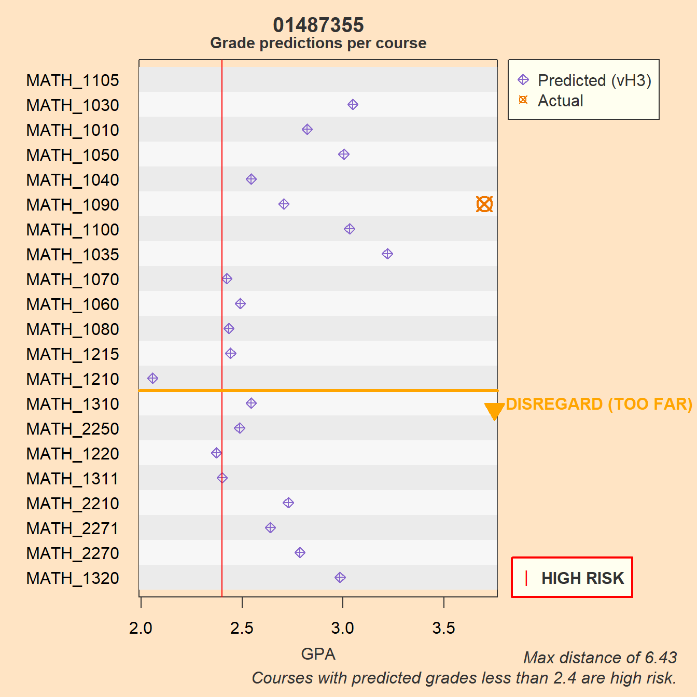

Counterfactuals Explained (vQ0)
PURPOSE: This report describes using counterfactuals and distance in recommending a course.
What are counterfactuals?
Counterfactuals are a “what if” question. In this case, it is an attempt to answer: What if the student took a different course? It uses the model that was trained on the actual courses taken, swaps out the course for the other options, and produces an expected grade.
Counterfactuals have a few problems. Chief among them is that there is no way to evaluate their accuracy: there is no way to know what would have actually happened if a student took a different course. It is taking a model grounded in reality and applying it to an imaginary landscape, exploring an alternate reality where people made different choices.
One way to improve the reasonableness of a counterfactual estimate is to stay within the bounds of the training data. That is to say, the model would produce a poor estimate of a grade for a course that had completely dissimilar students. For example, take Math 2250, where the minimum incoming qualifications for students were an ACT math test score of 23 and a high school GPA of 3.11. The model’s predicted grade for that course for a student with much lower qualifications (say, an ACT math test score of 17 with a high school GPA of 3.0) might not be believably realistic.
In order to get the best counterfactual estimates, the predictions should be bounded to be close to what happened in reality.
In this case, it is recommended to limit interpreting counterfactuals to courses that are less than three distance units away. This limit is explored below. (A more thorough approach would be to use the “MatchIt” package to better match the fictitious counterfactual estimates with similar actual students.)
Using distance to limit counterfactuals
Two variables are the most relevant towards predicting the grade for initial math courses for first time freshmen: high school GPA and ACT math test scores.
Another variable can be derived from these two, called “distance”. It is the distance to the median qualifications of the successful student from the prior year. (Please see the section “Distance calculation explained” below for more detail.)
In the first place, the GPA gently declines as the distance increases, as shown in Figure 1. This suggests that a student should prefer courses that are closer.
In the second place, prediction accuracy also gently declines (or the prediction error mildly increases) with distance (as shown in Figure 2.) Actually, if you look at the graph closely, you’ll see that the prediction error increases up until a distance of about four, and then starts declining again. This increase in accuracy is due to the fact above: that the model easily predicts low grades for distant courses. Accuracy, but not desirability, is improved for the very distant courses.
Students have historically been capable of sorting themselves (or were guided) into close courses: 91% of the students took a course within three of these distance units (Figure 3).
Therefore, in order to improve desirability of a course and preserve a reasonable interpretation of a counterfactual, the author recommends limiting interpreting counterfactuals to courses that are less than three units away.
Distance calculation explained
For each course, how students who earned a B- or better performed on ACT math and high school GPA is calculated. An incoming student’s distance from that successful group is measured in standardized units across both dimensions.
More specifically, the median and standard deviation are calculated per course per year for the ACT math test scores and the high school GPA for students who achieved a grade of at least a B-minus.
Next, a standardized score is calculated for any given student. It is the difference for each of the student’s ACT math test score and high school GPA and the prior year’s median, divided by the standard deviation. (Note that this uses the median rather than the mean, making it more robust to outliers.)
Finally, the distance is calculated in Euclidean standardized space as the square root of the scores squared and summed.


Walking through an example
An example is given for a first-time freshman who took Math 1090 in the Fall of 2024. This student had a high GPA coming from high school, but relatively low test scores. These qualifications are plotted and compared to the median qualifications of the successful student from the prior year (Figure 4 and Figure 5). Both plots show the interquartile range plotted as an ellipse around Math 1090, the class he actually ended up taking, that roughly show the qualifications of about half of the successful students.
Our student is outside of that range, and it’s not terribly clear which course is closest to him. Several courses seem reasonable.
A look at the counterfactuals shows a wide range of estimated grades as well (Figure 6). The counterfactuals are sorted from the closest to the farthest, with the three-unit cutoff shown as a horizontal orange line. His actual performance is shown as a circled red ‘x’.
As it is, he performed better than expected with a grade of 3.7 against a prediction of 2.7. However, one wonders if he could have done even better in Math 1035, where he was predicted to achieve 3.2. In any case, it looks like he could have done as well in any of Math 1030, 1010, 1050, 1100, or 1035 as he did in 1090. 1040, where his predicted grade was lower, might be a questionable recommendation. Math 1070, 1060, 1080, and 1215 can hardly be recommended and Math 1210 can’t be recommended at all as it is both far away from him and his predicted grade is so low it puts him at a higher risk of failing.


| HS GPA | ACT Math |
|---|---|
| 3.98 | 17 |
| Distance | Predicted Grade | Median ACT Math | Median HS GPA | |
|---|---|---|---|---|
| MATH_1030 | 1.36 | 3.05 | 21.0 | 3.80 |
| MATH_1010 | 1.45 | 2.82 | 20.0 | 3.74 |
| MATH_1050 | 1.79 | 3.00 | 23.0 | 3.83 |
| MATH_1040 | 1.90 | 2.54 | 26.5 | 3.86 |
| MATH_1090 | 1.90 | 2.71 | 24.0 | 3.83 |
| MATH_1100 | 2.06 | 3.03 | 25.5 | 3.81 |
| MATH_1035 | 2.12 | 3.22 | 24.0 | 3.71 |
| MATH_1070 | 2.27 | 2.42 | 26.0 | 3.90 |
| MATH_1060 | 2.51 | 2.49 | 25.0 | 3.90 |
| MATH_1080 | 2.55 | 2.43 | 25.0 | 3.87 |
| MATH_1215 | 2.58 | 2.44 | 26.0 | 3.91 |
| MATH_1210 | 2.64 | 2.06 | 27.0 | 3.94 |
| MATH_1310 | 3.34 | 2.55 | 28.0 | 3.90 |
| MATH_2250 | 3.39 | 2.49 | 34.0 | 4.00 |
| MATH_1220 | 3.58 | 2.37 | 29.0 | 3.96 |
| MATH_1311 | 3.69 | 2.40 | 30.0 | 3.99 |
| MATH_2210 | 4.71 | 2.73 | 32.0 | 3.98 |
| MATH_2271 | 4.81 | 2.64 | 36.0 | 3.99 |
| MATH_2270 | 4.85 | 2.79 | 30.0 | 4.00 |
| MATH_1320 | 6.43 | 2.98 | 31.5 | 3.99 |
| MATH_1105 | NA | NA | NA | NA |